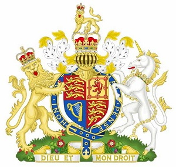

The United Kingdom of Great Britain and Northern Ireland
Official signs
The United Kingdom of Great Britain and Northern Ireland has 3 official signs: Flag, Coat of Arms and Anthem.
The Flag and The Coat of Arms display the history of the UK, history of the development of this country. There are 4 stages of the development of the coutry. At first England united with Wales in 1039. On 1 May, 1707 the kingdom of Great Britain was created by the Acts of Union. This Act united 2 countries: England and Scotland. Then on 1 January, 1801 the kingdom of Great Britain and Ireland passed the Act of Union, uniting two kingdoms and creating the United Kingdom of Great Britain and Ireland. After in 1949 Ireland gained independence and only small part of it, Northern Ireland, remained in the UK. By this time the UK consists of 4 parts: England, Scotland, Wales and Northern Ireland. But Wales is not represented in the Flag and in the Coat of Arms because at the time when the Flag and the Coat of Arms appeared Wales was already united with England, so sometimes people in Wales ask the govermet to put the symbol of the Red Dragon, national symbol of Wales, on the Flag and the Coat of Arms, to avoid "discrimination" of this part of the United Kingdom.
The Flag The Flag of the UK is called the Union Flag or The Union Jack. The Flag consists of the combination of the croses of 3 patron saints of the country: The Coat of Arms The Royal coat of arms of the United Kingdom is the official coat of arms of the British monarch, currently Queen Elizabeth II. These arms are used by the Queen in her official capacity as monarch of the United Kingdom, and are officially known as her Arms of Dominion. Variants of the Royal Arms are used by other members of the Royal Family; and by the British government in connection with the administration and government of the country. In Scotland, the Queen has a separate version of the Royal Arms, a variant of which is used by the Scotland Office. The State Emblem of the UK shows the union of its four parts. The emblem was introduced in 1707. The shield of the emblem is divided into four parts. There are emblems of England (three lions on a red background), emblem of Scotland (a red lion on a yellow background) and the emblem of Norther Ireland (a yellow harp on a blue background).
The two emblems of English lions symbolise the leading role of England in this Union. The Shield is supported by two mythic animals: the English Lion and the Scottish Unicorn. The emblem is headed with a crowed lion, the symbol of power and might. Below the emblem there are floral symbols of the four parts of the country (England – the red rose, Scotland – the thistle, Wales – the leek or the daffodil, Ireland – the shamrock)
The Anthem «God Save the Queen» is an anthem used in a number of Commonwealth realms, their territories, and the British Crown Dependencies. The words and title are adapted to the gender of the current monarch, e.g., replacing "Queen" with "King", "she" with "he", and so forth, when a king reigns. The author of the tune is unknown, and it may originate in plainchant, but a 1619 attribution to John Bull is sometimes made.
«God Save the Queen» is the de facto British national anthem and has this role in some British territories. It is one of two national anthems for New Zealand (since 1977) and for several of Britain's territories that have their own additional local anthem. It is the royal anthem of Australia (since 1984), Canada (since 1980), Barbados, Jamaica, and Tuvalu. In countries not previously part of the British Empire, the tune of «God Save the Queen» has provided the basis for various patriotic songs, though still generally connected with royal ceremony.
Beyond its first verse, which is consistent, it has many historic and extant versions: Since its first publication, different verses have been added and taken away and, even today, different publications include various selections of verses in various orders. In general, only one verse is sung. Sometimes two verses are sung, and on rare occasions, three.
The sovereign and his or her consort are saluted with the entire anthem, while other members of the royal family who are entitled to royal salute (such as the Prince of Wales) receive just the first six bars. The first six bars also form all or part of the Vice Regal Salute in some Commonwealth realms outside the UK (e.g., in Canada, governors general and lieutenant governors at official events are saluted with the first six bars of «God Save the Queen» followed by the first four and last four bars of «O Canada»), as well as the salute given to governors of British overseas territories.